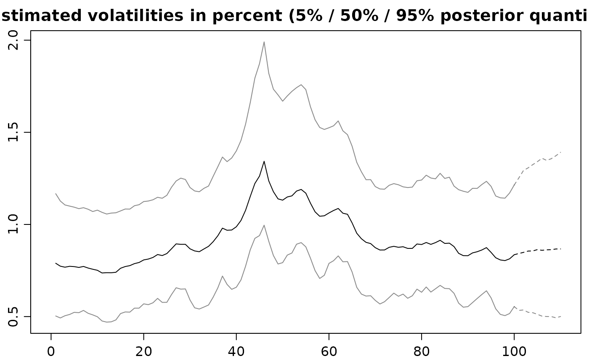
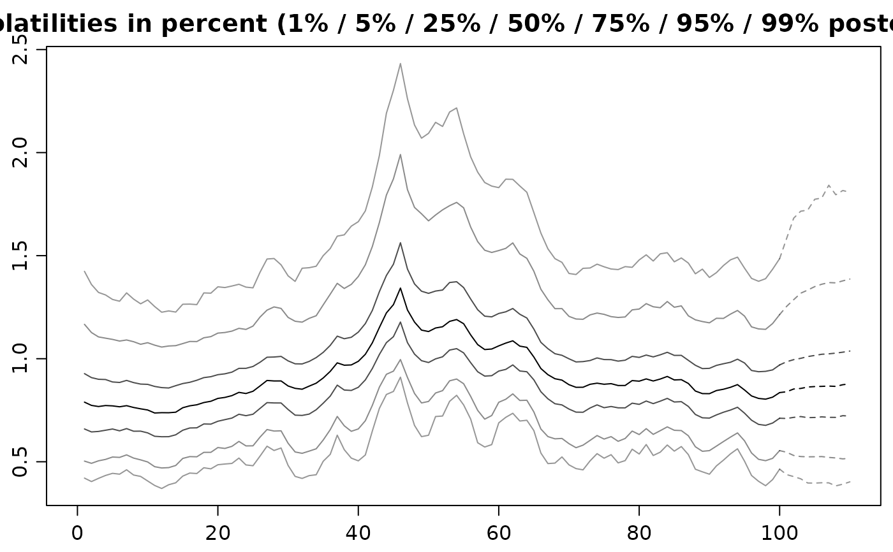

Displays quantiles of the posterior distribution of the volatilities over time as well as predictive distributions of future volatilities.
volplot( x, forecast = 0, dates = NULL, show0 = FALSE, forecastlty = NULL, tcl = -0.4, mar = c(1.9, 1.9, 1.9, 0.5), mgp = c(2, 0.6, 0), simobj = NULL, newdata = NULL, ... )
| x |
|
|---|---|
| forecast | nonnegative integer or object of class |
| dates | vector of length |
| show0 | logical value, indicating whether the initial volatility
|
| forecastlty | vector of line type values (see
|
| tcl | The length of tick marks as a fraction of the height of a line of
text. See |
| mar | numerical vector of length 4, indicating the plot margins. See
|
| mgp | numerical vector of length 3, indicating the axis and label
positions. See |
| simobj | object of class |
| newdata | corresponds to parameter |
| ... | further arguments are passed on to the invoked |
Called for its side effects. Returns argument x invisibly.
In case you want different quantiles to be plotted, use
updatesummary on the svdraws object first. An example
of doing so is given below.
updatesummary, predict.svdraws
Other plotting:
paradensplot(),
paratraceplot.svdraws(),
paratraceplot(),
plot.svdraws(),
plot.svpredict()
Gregor Kastner gregor.kastner@wu.ac.at
## Simulate a short and highly persistent SV process sim <- svsim(100, mu = -10, phi = 0.99, sigma = 0.2) ## Obtain 5000 draws from the sampler (that's not a lot) draws <- svsample(sim$y, draws = 5000, burnin = 100, priormu = c(-10, 1), priorphi = c(20, 1.5), priorsigma = 0.2) #> Done! #> Summarizing posterior draws... ## Plot the latent volatilities and some forecasts volplot(draws, forecast = 10)  ## Re-plot with different quantiles newquants <- c(0.01, 0.05, 0.25, 0.5, 0.75, 0.95, 0.99) draws <- updatesummary(draws, quantiles = newquants) volplot(draws, forecast = 10) 